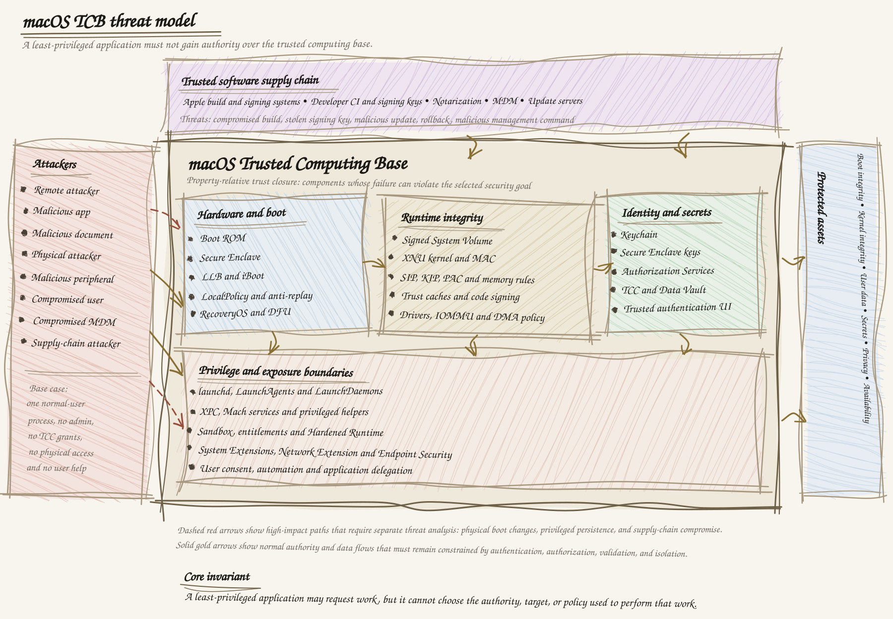

Threat modeling the macOS Trusted Computing Base
TL;DR - The macOS Trusted Computing Base is not one feature, one process, or one security boundary. It is the property-relative set of components that must behave correctly for a security promise to hold. For a least-privileged application, the promise is simple: it must not gain authority over trusted system code, protected data, credentials, privacy controls, or security policy.
This is the first entry in a series about threat modeling everyday technology. The goal is not to produce a feature tour. The goal is to take a new security concept, turn it into a model, and teach it clearly enough that another person can inspect the reasoning.
1. Start with the promise, not the product name
Imagine that a product team hands us a new product called TCB. There is no documentation, no architecture diagram, and no list of security features. The only useful starting point is the product promise.
A least-privileged application must not be able to gain authority over the macOS Trusted Computing Base.
This sentence gives us a security property that we can test. It also forces us to define what authority over the TCB means.
An attacker succeeds if they can:
- Modify trusted boot or system code.
- Execute code with kernel or equivalent system authority.
- Change security policy without the required authorization.
- Cause a trusted service to perform a privileged operation on their behalf.
- Read or alter secrets that the platform is supposed to protect.
- Persist in a way that survives normal cleanup or reboot.
- Disable, falsify, or hide security monitoring.
- Break availability by preventing boot, login, networking, update, or recovery.
TCB is not a universal list. It depends on the security property. A document editor may not matter for boot integrity, but it matters greatly for the confidentiality of a document that it can open and export.
2. Scope and attacker model
We begin with the weakest useful attacker: a malicious application already running as a normal user process.
The attacker has:
- Arbitrary code execution inside its own process.
- Normal user-level filesystem access.
- Access to public macOS APIs.
- Network access subject to the current configuration.
- The ability to send requests to exposed local services.
- The ability to submit malformed files, messages, and device requests.
The attacker does not initially have:
- Administrator or
rootprivileges. - Kernel execution or kernel memory access.
- TCC permissions such as Full Disk Access, Accessibility, Screen Recording, or Input Monitoring.
- Permission to change SIP, Secure Boot, FileVault, or recovery policy.
- Physical access to the Mac.
- Cooperation from the user.
We add stronger attackers as separate models:
- Remote attacker with no local code execution.
- Malicious document or website.
- Local malicious application.
- Local attacker with an account.
- Administrator or
root-level attacker. - Physical attacker.
- Malicious peripheral or device firmware.
- Compromised developer, update service, or MDM.
3. Assets and security goals
| Asset | Security goal | Example failure |
|---|---|---|
| Boot code and policy | Integrity | Old or attacker-modified code starts before macOS |
| Kernel and system services | Integrity and availability | Normal application becomes kernel-level code |
| User documents | Confidentiality and integrity | Data is read or altered without approval |
| Passwords and private keys | Confidentiality and controlled use | Key material is exported or misused |
| Camera, microphone, screen, and input | Privacy | Capture occurs without an approved capability |
| Security policy | Integrity | Permissions or startup policy are silently changed |
| Update mechanism | Authenticity and integrity | Trusted software delivery installs malicious code |
| Audit records | Integrity and accountability | An attacker can hide the action that occurred |
| System availability | Availability | The Mac cannot boot, log in, connect, or recover |
4. The complete sketch
The diagram is the working model for this post. It is intentionally property-based. The middle is not a claim that every box is trusted for every property. It is the union of the trust closures we need to examine.

Normal authority and data flows must be constrained by authentication, authorization, validation, and isolation. High-impact paths such as boot changes, privileged persistence, and trusted updates require separate analysis because they can re-enter the TCB with greater authority.
5. Trust boundaries
A threat is not simply the existence of an interface. A threat is attacker-controlled input crossing a boundary and causing a trusted component to perform an action the attacker should not control.
Application to privileged service
Normal application
|
| XPC or Mach request
v
Privileged service
|
v
Protected system stateA privileged service must answer five questions for every request:
- Can this caller connect?
- Is this caller allowed to request this operation?
- Are the parameters safe?
- Is this caller allowed to affect this exact target?
- Does the result reveal or modify protected state?
Apple describes XPC as a mechanism for interprocess communication, service lifecycle management, and privilege isolation. A normal XPC service is not the same thing as a root LaunchDaemon. The distinction matters because the daemon, its installation path, and the permissions protecting its dependencies may all be part of the TCB. Apple XPC documentation
Application to operation and data
A safe privileged operation should be narrow:
updateTCBConfiguration(approvedConfiguration)It should not expose a generic primitive such as:
writeFile(path, data)
execute(command)
loadPlugin(name)
changePolicy(key, value)Generic primitives let the untrusted caller choose the authority, target, and operation. A narrow operation lets the helper choose the destination, permitted fields, ownership, permissions, and commit procedure.
The helper must also protect against:
- Path traversal.
- Symbolic-link and hard-link confusion.
- Time-of-check/time-of-use races.
- Attacker-controlled configuration consumed by a later privileged service.
- Unsafe deserialization.
- Partial writes and ambiguous failure states.
- Error messages that disclose protected state.
Application to the kernel
The kernel boundary is wider than system calls. The attacker controls pointers, lengths, file descriptors, Mach messages, shared-memory contents, timing, network packets, and device requests.
The kernel must preserve invariants such as:
- A process cannot forge a stronger credential.
- A process cannot modify kernel memory.
- A process cannot read another process without authorization.
- A process cannot change security policy directly.
- A process cannot load arbitrary privileged code.
- A process cannot turn a valid object handle into access to a different privileged object.
A kernel bug can collapse many user-space boundaries at once. Secure Boot and the Signed System Volume help establish that trusted code was loaded, but they do not prove that the code is free of exploitable logic or memory-safety bugs. Apple documents System Integrity Protection as a mandatory restriction that applies even to privileged processes, and Kernel Integrity Protection as a separate hardware-backed runtime control on supported Apple silicon. System Integrity Protection
Application to drivers and hardware
Hardware-facing code processes data from devices, firmware, and external interfaces. The flow is:
Application
|
v
Device framework
|
v
Driver or system extension
|
v
Peripheral, firmware, or DMA engineA kernel driver bug can become kernel compromise. A user-space system extension bug may be contained to that extension, depending on the boundary it crosses.
DMA creates another path from a peripheral to system memory. Apple documents IOMMU-based protections that restrict a device to memory explicitly mapped for it. That reduces the risk of a malicious device writing to arbitrary kernel or process memory, but it does not make the driver trustworthy. The driver still decides which buffers to map. DMA protections for Mac computers
Application to physical access and recovery
Physical access is not one state. We must model a powered-off Mac, a locked running Mac, an unlocked session, RecoveryOS, and a Mac with a compromised recovery credential separately.
With FileVault enabled and no valid credential or recovery key, the internal volume is intended to remain encrypted even if the storage is removed. This protects confidentiality, but a physical attacker may still be able to erase the device and destroy availability. FileVault in macOS
On Apple silicon, boot policy is represented through a device-specific LocalPolicy with anti-replay protections. Full, Reduced, and Permissive security modes provide different tradeoffs. RecoveryOS is part of the secure boot model, not an untrusted afterthought. Boot process for a Mac with Apple silicon
On Intel Macs with the T2 Security Chip, Startup Security Utility provides Full Security, Medium Security, and No Security configurations. That makes hardware generation a first-class threat-model input. Startup Security Utility on a Mac with T2
Application to post-unlock data
After login, FileVault is no longer the main boundary. The relevant controls become:
- Filesystem permissions.
- App Sandbox.
- TCC and Data Vault.
- Keychain access control.
- IPC and automation authorization.
- User consent and trusted UI.
macOS protects privacy-sensitive categories such as protected folders, camera, microphone, screen recording, input monitoring, accessibility, and automation. Apple documents Data Vault as a control that can protect sensitive data even from processes that are not themselves sandboxed. Protecting app access to user data
One permission must not be treated as a universal permission. A process with Screen Recording is not automatically allowed to read the Keychain. A process with Automation permission is not automatically authorized to export every document from another application.
Application to identity and secrets
The Keychain protects passwords, certificates, private keys, and tokens. The Secure Enclave is designed to keep sensitive key material isolated from the main application processor. The strongest design is to request a key operation instead of exporting the private key:
Preferred:
“Sign this message with key K.”
Riskier:
“Give me the private key bytes for K.”Keychain metadata and secret values have different protection paths, and item-level access control can require stronger authentication. Keychain data protection
Hardware-backed protection does not fix a bad authorization decision. A compromised application may still misuse a key operation that it is legitimately allowed to request, or exfiltrate a token after an authorized service releases it.
Application to code execution
The application execution chain is:
Downloaded bytes
|
v
Quarantine and provenance
|
v
Developer signature
|
v
Notarization and revocation
|
v
Gatekeeper
|
v
Entitlements, Hardened Runtime, Sandbox
|
v
Application executionCode signing answers who signed these bytes. Notarization tells us that Apple scanned a submitted copy for known malicious content. Gatekeeper makes a launch decision. None of these, individually or together, proves that the application will behave safely after launch. Apple notarization documentation
macOS is designed to run general-purpose user code. The security model is layered rather than a simple rule that only Apple-approved code may ever execute. The main risk is not only malicious code entering the system. It is also trusted code loading attacker-controlled plugins, frameworks, scripts, or documents.
Application to persistence
A least-privileged application may first seek user-level persistence through login items, user LaunchAgents, browser extensions, or application helpers. It may later attempt to obtain system-level persistence through a LaunchDaemon, privileged helper, system extension, MDM profile, or kernel extension.
The dangerous invariant violation is:
Normal application
|
v
Writable dependency or launch configuration
|
v
Root LaunchDaemon
|
v
System-level executionRoot services must not execute code or load dependencies from user-writable locations. Authorization to install a helper must not become permanent authorization to replace it later.
Application to network exposure
The network stack processes attacker-controlled packets, so it is part of the kernel trust closure. Network-facing services, VPNs, DNS proxies, content filters, and remote-management agents add additional trust boundaries.
Network Extension can customize VPN, DNS, relay, and content-filter behavior. A content filter that can see user traffic is part of the confidentiality TCB for that traffic. Apple describes a split between data and control providers to limit the ability of a configuration component to export user network content. Content filter providers
Availability is a security property here. A remote attacker does not need code execution if they can exhaust memory, file descriptors, sockets, CPU, storage, or operator attention. Every network path therefore needs limits, timeouts, authentication, safe parsing, and a defined fail-open or fail-closed behavior.
6. The main attack tree
Goal: gain authority over the macOS TCB
|
|-- Exploit a trusted component
| |-- Kernel or driver vulnerability
| |-- Privileged daemon vulnerability
| |-- XPC or Mach message flaw
| |-- Keychain or authorization service flaw
| +-- Network-facing parser flaw
|
|-- Abuse a trusted component
| |-- Confused deputy
| |-- Weak caller authentication
| |-- Generic privileged API
| |-- Unsafe path or plugin handling
| +-- Over-broad delegation or automation
|
|-- Modify trusted state
| |-- Writable launch configuration
| |-- Replace helper or dependency
| |-- Change security policy
| |-- Tamper with update metadata
| +-- Reintroduce an old boot policy
|
|-- Obtain stronger authorization
| |-- Fake password prompt
| |-- TCC or Accessibility deception
| |-- Stolen admin credential
| |-- Recovery key compromise
| +-- Compromised MDM enrollment
|
+-- Break availability
|-- Kernel panic
|-- Resource exhaustion
|-- Malicious peripheral
|-- Network or DNS disruption
+-- Erase or disable recovery7. The confused-deputy problem
The most important cross-layer attack is indirect authority borrowing:
Malicious application
|
v
Trusted application
|
v
Privileged helper
|
v
Protected resourceThe privileged helper may see a request from a trusted application and fail to notice that the original request came from an attacker-controlled document, automation event, plugin, or IPC client.
The defense is to preserve the causal chain:
- Who initiated the request?
- What exact action was requested?
- Which resource is affected?
- Was user intent established?
- Is the authority transferable?
- Can the result flow back to the attacker?
A broad rule such as “Application A may control Application B” is weaker than a scoped capability such as “Application A may export document X to destination Y once, after user confirmation.”
8. Security invariants
Threat models become useful when they produce invariants that can be tested.
Boot and physical state
- Storage removal does not reveal encrypted user data without valid authorization.
- An attacker cannot silently lower boot security or replay an older weak policy.
- Recovery can erase the system without automatically decrypting confidential data.
- Boot objects and system content are verified before trusted execution.
Runtime and kernel
- A normal application cannot modify trusted system code.
- A normal application cannot load arbitrary kernel-level code.
- Kernel interfaces validate attacker-controlled pointers, lengths, handles, and state.
- A sandbox escape does not automatically become kernel compromise.
- Drivers and extensions have no more authority than their function requires.
Services and authorization
- Connecting to a service does not imply permission to perform every operation.
- Authorization is specific to the action, resource, caller, and time.
- The authorized object is the object actually used.
- Privileged services never trust caller-controlled paths, commands, or plugins.
- Untrusted input cannot become trusted executable state.
Data and secrets
- One TCC permission does not grant unrelated permissions.
- Key material is used through narrow operations where possible.
- A trusted application cannot act as a generic secret or privacy proxy.
- Plaintext secrets do not enter logs, temporary files, or attacker-readable channels.
- Data access remains protected after the user unlocks the Mac.
Persistence and updates
- User-level persistence cannot silently become system-wide persistence.
- Root services do not load code or configuration from user-writable paths.
- Update authorization covers all executable components and dependencies.
- Rollback is limited to known-safe versions.
- Revoked code cannot continue to receive new authority indefinitely.
Network and availability
- Unnecessary services are not reachable.
- Every exposed service authenticates and authorizes its clients.
- Network parsers have size limits, timeouts, and resource quotas.
- Network extensions receive only the visibility needed for their function.
- A security failure does not silently create a permanent denial of recovery.
9. TCB closure by security property
There is no single answer to “what is the macOS TCB?” The answer depends on what we are protecting.
| Security property | Relevant trust closure |
|---|---|
| Boot integrity | Boot ROM, Secure Enclave, LLB, iBoot, LocalPolicy, recovery, update authorization, SSV |
| Kernel integrity | Boot chain, XNU, SIP, MAC, KIP, trust caches, kernel collections, drivers, IOMMU |
| User-data confidentiality | FileVault, APFS, kernel access controls, TCC, Data Vault, authorized brokers, applications with access |
| Secret protection | Secure Enclave, Keychain, access-control policy, authentication UI, calling applications, token consumers |
| Privacy | TCC, Data Vault, sandbox, automation and accessibility controls, camera and microphone paths, screen and input paths |
| Application integrity | Developer signing, notarization, Gatekeeper, code-signing enforcement, entitlements, Hardened Runtime, sandbox, updater |
| Enterprise management | Enrollment, MDM server, identity provider, configuration profiles, administrator accounts, recovery-key escrow |
| Availability | Kernel, launchd, storage, drivers, network stack, peripherals, recovery, update and remote-management paths |
10. What macOS does well
Modern macOS reduces the TCB through several design choices:
- Hardware-rooted secure boot.
- Secure Enclave isolation.
- Signed System Volume protection.
- System Integrity Protection.
- Hardware memory and pointer protections.
- App Sandbox and mandatory access controls.
- TCC and Data Vault for privacy-sensitive data.
- Keychain and hardware-backed key operations.
- User-space system extensions instead of unnecessary kernel extensions.
- Signed, notarized application distribution.
- Device-specific update authorization and anti-replay.
- IOMMU-based DMA isolation.
These controls work together. A malicious application may be blocked from the system volume, contained by the sandbox, denied TCC data, and prevented from loading a kernel extension. If one boundary fails, the other boundaries can still reduce the impact.
11. What macOS cannot promise
The model also has limits:
- Secure Boot cannot prove that trusted code has no bugs.
- Notarization cannot prove that an application is well-behaved.
- FileVault cannot protect data after an authorized unlock and release.
- The Secure Enclave cannot protect a secret after an authorized application exports it.
- TCC cannot prevent a user from granting a permission to malicious software.
- A root compromise can defeat many user-space assumptions.
- A kernel compromise can make user-space monitoring unreliable.
- A compromised developer, Apple signing system, or MDM can create trusted compromise.
- Physical attackers may still erase or destroy a device even when they cannot decrypt it.
- Availability failures can remain possible even when confidentiality and integrity hold.
A good threat model is valuable partly because it makes these limits explicit.
12. Validation plan
The next step after modeling is validation. We should not stop at “the architecture appears secure.” We should create evidence for every invariant.
Configuration review
- Identify Apple silicon, T2 Intel, or older Intel hardware.
- Record Secure Boot, SIP, FileVault, and Lockdown Mode state.
- Inventory LaunchAgents, LaunchDaemons, login items, helpers, and system extensions.
- Review ownership and permissions of privileged executables and dependencies.
- Review TCC grants, automation permissions, and accessibility permissions.
- Review MDM enrollment type, profiles, administrator roles, and recovery-key handling.
Boundary testing
- Send malformed but non-destructive requests to local services in a lab.
- Test every privileged operation with unauthorized callers.
- Test path, link, race, and partial-write behavior.
- Test cross-user and post-logout behavior.
- Test update verification with modified and downgraded packages.
- Test removal of helpers and extensions.
- Test network service resource limits and failure modes.
- Test whether logs remain trustworthy after service failure.
Evidence questions
- What exact code enforces this invariant?
- What happens if the enforcing process crashes?
- What happens if the caller is compromised?
- What happens if the user approves the wrong prompt?
- What happens if the network is unavailable?
- What happens if the system is downgraded?
- What happens if the device is physically stolen?
- What happens if an authorized update is malicious?
13. Final verdict
The macOS TCB is broad, but it is not one undifferentiated blob.
It is a set of property-specific trust closures connected by boundaries:
Hardware root of trust
|
v
Boot policy and recovery
|
v
Signed system and kernel
|
v
Privileged services and IPC
|
v
Data, identity, and privacy controls
|
v
Applications, extensions, updates, and network servicesThe most important design principle is:
A least-privileged application may request work, but it cannot choose the authority, target, or policy used to perform that work.
That principle explains why narrow privileged APIs are safer than generic ones, why a trusted application can become a confused deputy, why user-space extensions are preferable to kernel extensions, why FileVault and TCC solve different problems, why authorization must bind to an exact operation, and why update infrastructure belongs in the TCB.
For a modern Apple-silicon Mac with strong startup security, FileVault, SIP, no unnecessary kernel extensions, narrow privacy permissions, secure updates, and careful physical security, the attack surface is substantially reduced. It is not eliminated. The remaining risk lives at the boundaries: parsers, privileged services, delegated authority, kernel bugs, drivers, user approval, recovery credentials, trusted updates, MDM, and availability.
That is the point of threat modeling. It turns a product name into a set of claims that can be challenged, tested, and explained.
Sources
- Apple Platform Security
- Hardware security overview
- Boot process for a Mac with Apple silicon
- Signed System Volume security
- System Integrity Protection
- Securely extending the kernel in macOS
- Direct memory access protections
- Controlling app access to files
- Protecting app access to user data
- Keychain data protection
- Authorization Services
- XPC
- Endpoint Security
- Network Extension
- Device management security overview